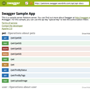
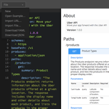

Tools
Swagger UI
Use a Swagger specification to drive your API documentation. Demo and Download.

Swagger Editor
An editor for designing Swagger specifications from scratch, using a simple YAML structure. Demo and Source.
SDK Generators
Turn an API spec into client SDKs or server-side code with Swagger Codegen.